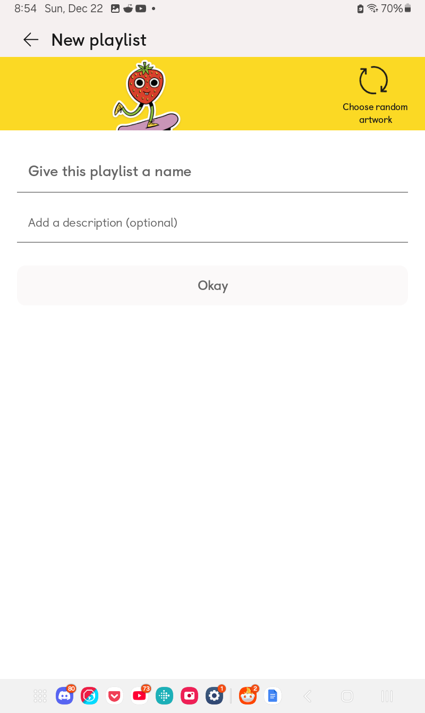
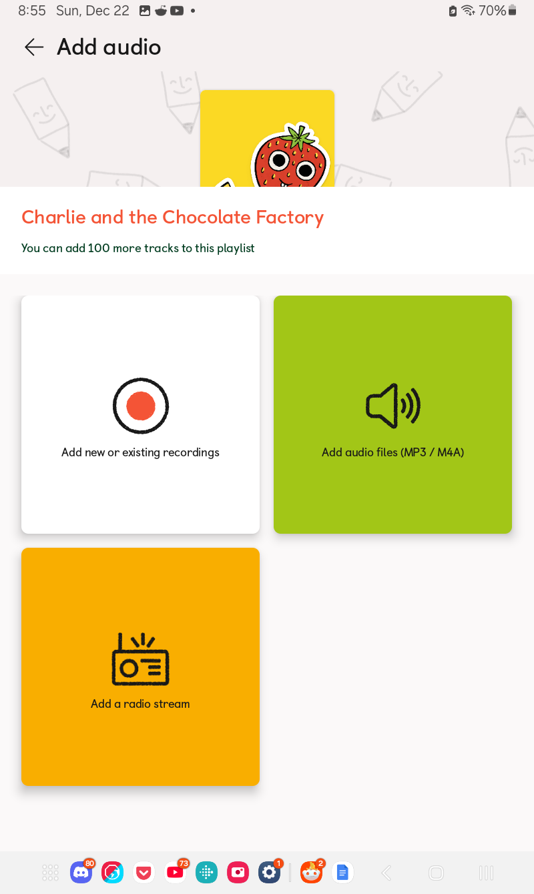
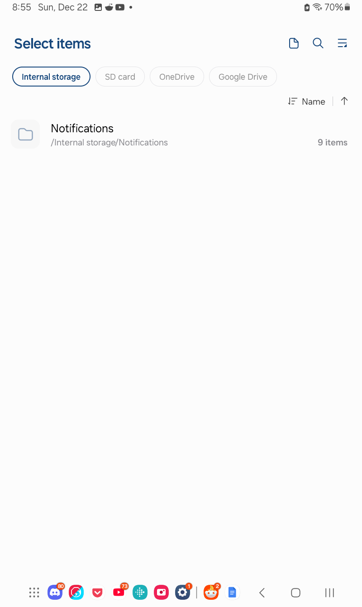
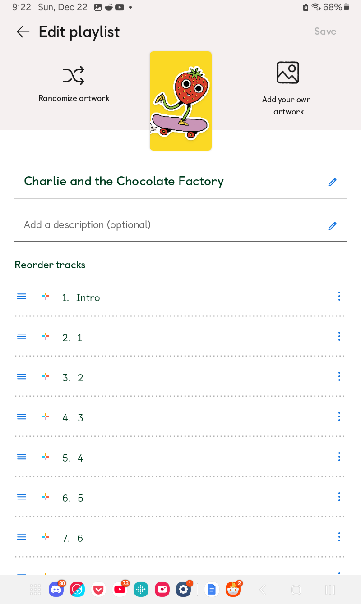
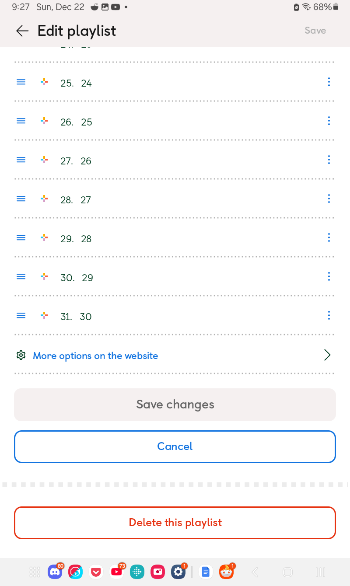
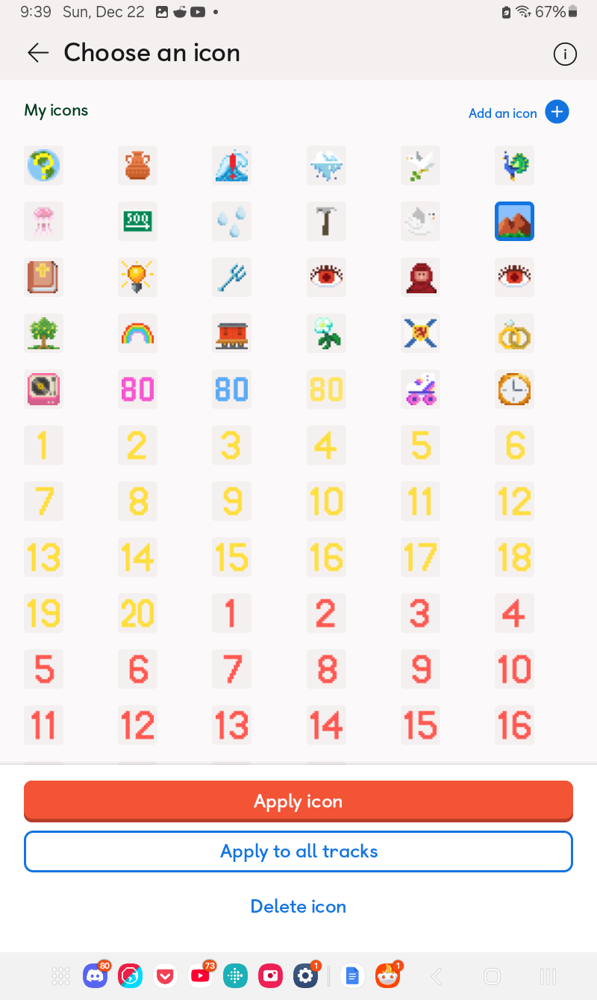

Making a MYO Playlist - Using the Yoto App
Using the app is a bit finickier than the computer and is missing several options, so I don’t recommend it. If you’re restricted to mobile, it would be best to still use the in-browser version of My Yoto if possible (you should theoretically be able to do this and follow along with the computer tutorial, but I still need to test this). But if for some reason you must use the app, or it’s just more comfortable for you, I’ve made a tutorial anyhow.
Please note this guide assumes you have already signed up for a Yoto account.
Please also note you do not yet need to own a Yoto device to be able to sign up and make playlists! I totally recommend signing up before purchasing so you can try out making a playlist to see how you feel about the process/using the app/etc. You can also start making them while your Yoto is in transit to you so you have playlists ready to be listened to when it arrives!
We will start by opening our Yoto app, and navigating to the “Playlists” section by using the row of coloured tabs above the card thumbnails.
As you can see I’ve already got several playlists here:

If this is your first playlist, you’ll likely only have the large blue button, which we will press to start making our first playlist, giving us this screen: 
You’ll want to give your playlist a name, as that’s mandatory to continue. I’m going to be making a playlist for Charlie and the Chooclate Factory, so that’s the name I’ve put in for mine:

If you want to add a description with more information about the audio you’re going to use, then you can do that as well. You can also press the “Random Artwork” button at the top right to generate a random card cover from Yoto’s built-in designs. We’ll discuss the covers a bit more further down. For now you’ll want to press “Save” and move on to the next screen: 
This is where we’ll be adding our audio. For this guide we’re going to be making a playlist of MP3s, so you want to press the big green button. At this point, everyone’s experience will be slightly different depending on what mobile phone/tablet you are using, as you’re opening up the file menu of your phone. I’m using a samsung minitab, which looks like this: 
I’ll then be using the file browser to navigate to where I’ve stored my MP3s:

In my case I’ve got them all in one folder and it’s the only thing in the folder, so I’ll press the “Select all” button at the top left. Please keep in mind that Yoto will make the playlist using the order the tracks are displayed here, so you’ll want to use whatever sorting options you have to get them in line first (though you can manually sort playlists as well, we’ll cover that too). Once we’ve got our tracks selected, press the “Done” button at the bottom:

Which will bring us back to the Yoto interface:

It takes a bit of time to upload files to the app, so you’ll have to give it a couple minutes. When it’s done all the tracks will be green:

We can then press the “Done” button here as well.
Now, the Yoto app is a bit quirky in that it’s going to actually exit the editing interface now even though we’re not done yet.

So we need to press that pencil button at the top right to keep editing. 
This screen has a lot of different options, so let me walk you through them: - Top Left, Randomize Artwork: generates a random card art from Yoto’s built in designs. - Top Right, Add Your Own Artwork: This is where we’ll upload a custom card art from an image we have saved to our phone. - Left, Three blue lines beside each track: Hold down on these and drag to re-order tracks. - Left, Rainbow plus sign beside each track: Add a custom icon to each track - Right, Three blue dots beside each track: This opens up the track options menu, which is additional settings that are per track. This is not the same menu as you can access on the in-browser My Yoto space. More on that later. This is how you delete a track from a playlist, as well as re-name it.
If you scroll all the way to the bottom of your playlist you’ll also see “More options on the website”: 
which will open the in-browser My Yoto space where if you scroll to the bottom of your playlist there you can access the Playlist Options mentioned in the computer tutorial. We’ll cover these at the bottom of this tutorial.

I’m not gonna lie, the app is a little bit of a mess in this regard.
Anyway, for now we want to add icons to our tracks! So we’ll press the rainbow-coloured plus icon next to our first track name to open up the icons menu:

If you have any custom icons uploaded, those will show up first. Otherwise Yoto has many icons already available to choose from.
I’m going to select this one of a chocolate bar and what may be a wedge of cheese but works well enough here as a golden ticket haha. Once I select it I am also going to press “apply to all tracks” as I don’t want to pick an icon for each individual track, but you can choose either one!

That will make every track icon the same and save me from having to apply it to each of my tracks:

If Yoto doesn’t have an icon available that suits the playlist you’re making, such as a character playlist (Bluey, Peppa, etc), then you’ll want to head over to Yoto Icons to download some more options to upload as custom icons. Mobile phones tend to save transparent images with a white background, however, so you may need to add your custom icons using the in-browser My Yoto space on your computer. But you can certainly give it a try on your phone and see how it goes for you. In that case from the icons menu you need to press the blue “Add an Icon” in the top right: 
And it will give you the choice to select an image from your camera roll or your file storage.
Now that we’ve got our icons, let’s cover the additional menus. I'll start with the in-app track settings menu, the three dots to the right of each track:

As you can see we only have three options here, and one of them is redundant. - Rename Audio - change the track name. You can also do this by just tapping the track name field and beginning to type. - Change Pixel Art - change the track icon. This can also be done by just pressing the icon already on the track. - Remove from this playlist - this deletes the track. I’m not sure why it specifies remove from this playlist–it's not storing it anywhere else, it just deletes the track. - Cancel - this just closes the menu
At this point there's nothing else you can do in the app itself so once you're happy with all your track info, you can save the playlist changes! At this point you have two options: you can move right on to linking your playlist to a card, or you can explore the additional options available to you in the in-browser My Yoto space.
If you want to link your card, you can skip ahead to linking a playlist to a myo card. Otherwise, this is where we really get into the limitations of the app and why using the in-browser space is unfortunately superior.
To open the in-browser version of your playlist, scroll down to the bottom of the playlist while you’re still in the editing screen, and select “More options on the website”:

As mentioned earlier, this is where you’ll be able to access this additional menu not present in the app:

Always play from start: By default, Yoto cards resume playing from wherever they were last stopped when inserted into a Yoto player, so that if your child is listening to a story it will continue where they left it. Selecting this option will disable that, so when the card is inserted it always plays from the very beginning no matter where it left off.
Shuffle tracks each time played: It’s Shuffle, just like in your music player/streaming of choice! When inserted, the card will start at a random track, and it will also pick a random track when skipping between songs. This also applies to turning the knob to seek certain tracks–they will appear in a random order. Excellent for music cards, but you definitely need to make sure all the icons are unique to avoid frustration!
Hide track numbers: When turning the knob on the Yoto to seek tracks, it displays the number of the track overtop of the picture icon, so you can see how far ahead you’re seeking. It is useful to disable this for very young children, so they can view the icon more clearly, since the numbers will not yet be useful to them.
However, as well as this menu Yoto makes obvious to you, there’s also an additional menu not present in the app that can be accessed here, which is the non-app version of the track settings menu, which can be accessed with the three dots to the right of each track:

These settings are per individual track. By default, every track will be set to “continue to next track”, which is normal play. However if you like, you can change any given track to need a button press interaction, or to loop by selecting the Repeat track option, which would be useful if you are making cards of background noise or music, such as for sleeping. Delete track is also still here, now more clearly named.
Stuff you change in either of these menus will still apply to the in-app version of your playlist. Once you’ve made any changes you like with these menus, we have truly explored all the MYO playlist options and can move on to linking the card, which is the next guide just below this one.